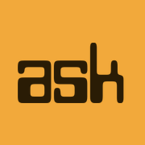
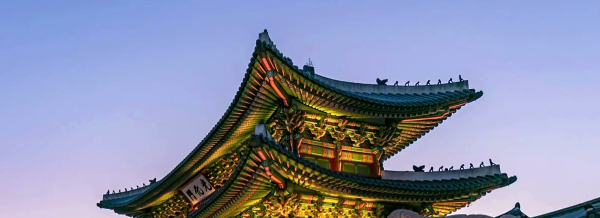

Industry, not tourism
Semiconductor and manufacturing site visits, research labs, and working sessions with engineers — not a bus tour with a factory stop bolted on.

AI Summer KoreaFirst cohort · Summer 2027 · 200 seats
A fully sponsored summer program bringing undergraduates from around the world into Korea's AI and semiconductor industry — the factories, the labs, the people who built them — alongside Korean and Asian students their own age.
Travel, housing, meals, and program costs are covered by our sponsors. A refundable completion deposit applies.
Why this exists
Almost every frontier AI model in the world is trained on memory and logic that passed through Korean fabrication plants. Students who will spend their careers building on top of that hardware rarely get to see any of it.
AI Summer Korea exists to close that gap — and to introduce a generation of engineers to the country, the industry, and the peers they will be working with for the next thirty years.
Semiconductor and manufacturing site visits, research labs, and working sessions with engineers — not a bus tour with a factory stop bolted on.
Korean and Asian undergraduates join as volunteers and teammates for the full four weeks. Everyone is a participant. Nobody is being toured around.
Every participant ships a team project and presents it. What you build is the record of the program — and what sponsors actually look at.
The four weeks
Based at a residential campus in Yangpyeong, Gyeonggi Province, with travel to sites across the country.
Arrival, orientation, and a working introduction to Korea's technology economy — how it was built, who built it, and where it is going. Language and culture basics. Teams are formed: visiting, Korean, and Asian students mixed from day one.
Site visits to semiconductor, manufacturing, and technology facilities, in small groups. Sessions with engineers and executives. Teams choose the problem they will work on.
Concentrated project work with mentor support and compute credits. Evening sessions with founders and researchers. One weekend of cultural travel outside the capital.
Final builds, demo day in front of sponsor executives and invited faculty, and closing. Standout teams and individuals are introduced to sponsor internship and recruiting tracks.

Where you go
We publish partners only once an agreement is signed. Everything below is marked with its actual status — nothing here is a logo we hope to earn.
Site list is provisional and will be updated as agreements are confirmed. Participants are notified of the final itinerary before departure.
Applying
Selection is by committee on the strength of your work and your reasons for coming. Applications for the summer 2027 cohort open in autumn 2026.
Korean & Asian students
This is not a program that happens to Korean students — it happens with them. Undergraduates based in Korea and across Asia join each cohort as volunteers, teammates, and guides.
Work on a project team for the full four weeks, help visiting students navigate the country, and take part in every site visit and session alongside them.
The same access, the same mentors, the same demo day, and a working relationship with peers at universities worldwide. Housing and meals are covered on program days.
For sponsors
Different sponsors fund different parts of this program, in the currency that is easiest for them to give. Some give seats on a plane. Some give access to a facility. Some give compute. All of it counts.
| What is funded | Typical sponsor | Form |
|---|---|---|
| Airfare | Airlines, large corporate CSR | Seats or cash |
| Housing & meals | Provincial government, listed companies | Cash or facility |
| Industry site visits | The host company itself | Access, not cash |
| Compute & AI tools | AI companies | Credits and engineer sessions |
| Named scholarships | Corporations, individual donors | Cash |
| Country programming | National agencies | Cash or in-kind |
Two hundred screened undergraduates in AI and computing, from around the world, spend four weeks inside your industry and present work you can evaluate. Demo day is a hiring room, not a photo opportunity.
Applicant and selection numbers, participant outcomes, project results, and follow-on recruiting activity — delivered after each cohort. We would rather show you a number than a testimonial.
The wider program
AI Summer Korea is the student track of the 999 Seoul Forum — a planned annual convening held every September 9th in Seoul, on the premise that Korea should host a standing international forum of its own rather than sending delegations to everyone else's.
The two are built to feed each other. Work that teams produce in the summer is carried into the September forum and put in front of the people who can act on it. The organizations that fund one are the organizations that fund the other.
Two hundred undergraduates from around the world inside Korea's AI and semiconductor industry, building in mixed teams with Korean and Asian peers.
The forum itself. Summer projects are presented, and the cohort's strongest work meets the people who fund and hire.
Questions
Yes. Airfare, housing, meals, insurance, and program costs are covered by sponsors. Admitted students place a refundable deposit that is returned in full when they complete the program.
No. The program runs in English. You will pick up some Korean along the way, and your Korean teammates will make sure you do not get lost.
Not at present. We are in early conversations with university partners about credit-bearing options for future cohorts. We will not claim credit until an agreement exists.
Summer 2027, four weeks. Exact dates are confirmed once the campus booking and site visits are locked, and will be published here before applications open.
It depends on your passport. For a stay of this length many nationalities need only a K-ETA travel authorization, while others require a short-stay visa. We tell you which applies to you, provide the supporting documentation, and cover the required application fees.
Full participation for four weeks, and a team project presented on demo day. This is a working program, not a holiday.
Yes — as a volunteer teammate. See the volunteer section above. You take part in the full program alongside the visiting cohort.
The first cohort is 200. We are deliberately starting smaller than our long-term target so that the first cohort is run properly.
Who runs this
AI Summer Korea is organised by the International Brain Sports Association, a Korean non-profit corporation licensed in March 2022 by the Seoul Metropolitan Government — licence no. 2022-53, granted under Article 32 of the Civil Act and the Ministry of Culture, Sports and Tourism's rules for non-profit corporations. It runs its own competitions in chess, janggi, speedcube and screen golf, and operates a registered-player system. The association is responsible for the venue, the site visits and everything that happens on the ground in Korea.
Our partner in the United States is Undenominated Church of Christianity, the California non-profit corporation that operates Plato School, incorporated in San Francisco on 1 September 2023. It handles the American side: recruitment in the United States and relationships with U.S. universities. Recruitment outside the United States is run from Seoul. A religious non-profit running a school is the oldest arrangement in education — Georgetown, Notre Dame and Boston College in the United States, Yonsei and Ewha in Korea, all founded on the same basis. The programme itself is secular.